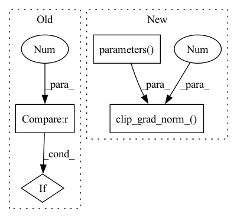

Pattern ID :17142
Before Change
torch.save(model, save)
else:
patience += 1
if early_stop and patience > 7 :
break
elif task == "multilabel":
f1_micro = f1_score(true, pred, average="micro")After Change
loss.backward(retain_graph=True)
else:
loss.backward()
torch.nn.utils.clip_grad_norm_(model.parameters() , 8 )
op.step()
if regularization:
print("Epoch " + str(epoch) + " train loss: " + str(totalloss1 / totals) + " reg loss: " + str(
totalloss2 / totals))In pattern: SUPERPATTERN
Frequency: 3
Non-data size: 4
Instances Fragment ID: 57276969
Project Name: pliang279/multibench
Commit Name: ad6f250adaddd084749a47bcb9bc54236badc5ea
Time: 2021-06-01
Author: ztwu_nil@zju.edu.cn
File Name: training_structures/Simple_Early_Fusion.py
M Class Name: AnonimousClass
N Class Name: AnonimousClass
M Method Name: train(16)
N Method Name: train(16)
M Parent Class:
N Parent Class:
M File Name: training_structures/Simple_Early_Fusion.py
N File Name: training_structures/Simple_Early_Fusion.py
M Start Line: 45
M End Line: 159
N Start Line: 42
N End Line: 164
Before Change
torch.save(model, save)
else:
patience += 1
if early_stop and patience > 7 :
break
elif task == "multilabel":
f1_micro = f1_score(true, pred, average="micro")After Change
loss.backward(retain_graph=True)
else:
loss.backward()
torch.nn.utils.clip_grad_norm_(model.parameters() , 8 )
op.step()
if regularization:
print("Epoch " + str(epoch) + " train loss: " + str(totalloss1 / totals) + " reg loss: " + str(
totalloss2 / totals)) Fragment ID: 57276971
Project Name: pliang279/multibench
Commit Name: 76a20ce2589f8280042a0ff0b97f31bded5c8c0c
Time: 2021-06-01
Author: ztwu_nil@zju.edu.cn
File Name: training_structures/Simple_Early_Fusion.py
M Class Name: AnonimousClass
N Class Name: AnonimousClass
M Method Name: train(16)
N Method Name: train(16)
M Parent Class:
N Parent Class:
M File Name: training_structures/Simple_Early_Fusion.py
N File Name: training_structures/Simple_Early_Fusion.py
M Start Line: 45
M End Line: 159
N Start Line: 42
N End Line: 164
Before Change
// If the embedding function changes more rapidly than the TTS can adapt to it, we run into issues.
bt_losses_this_epoch.append(bt_cycle_dist.item())
train_loss = train_loss + bt_cycle_dist
if step_counter % 1000 == 0 :
reg_loss = style_embedding_function.gst.calculate_ada4_regularization_loss()
train_loss = train_loss + reg_loss
reg_losses_this_epoch.append(reg_loss.item())After Change
optimizer.zero_grad()
scaler.scale(reg_loss).backward()
scaler.unscale_(optimizer)
torch.nn.utils.clip_grad_norm_(net.parameters() , 1.0 , error_if_nonfinite=False)
scaler.step(optimizer)
scaler.update()
del reg_loss
Fragment ID: 57276970
Project Name: digitalphonetics/ims-toucan
Commit Name: 27e7d5239e3c73f64b935f79495b776f4e966dae
Time: 2022-10-31
Author: florian.lux@ims.uni-stuttgart.de
File Name: TrainingInterfaces/Spectrogram_to_Embedding/embedding_function_train_loop.py
M Class Name: AnonimousClass
N Class Name: AnonimousClass
M Method Name: train_loop(14)
N Method Name: train_loop(14)
M Parent Class:
N Parent Class:
M File Name: TrainingInterfaces/Spectrogram_to_Embedding/embedding_function_train_loop.py
N File Name: TrainingInterfaces/Spectrogram_to_Embedding/embedding_function_train_loop.py
M Start Line: 160
M End Line: 222
N Start Line: 146
N End Line: 200